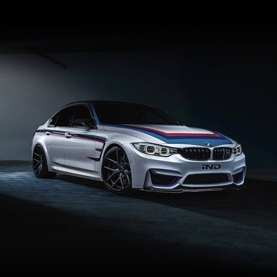
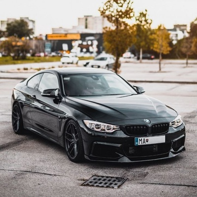
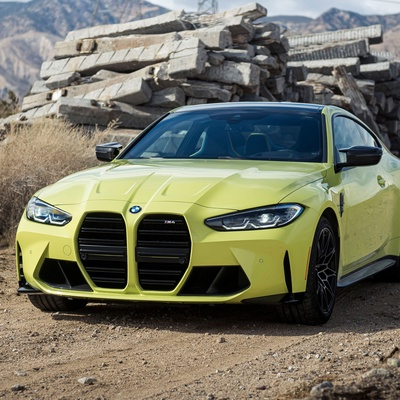
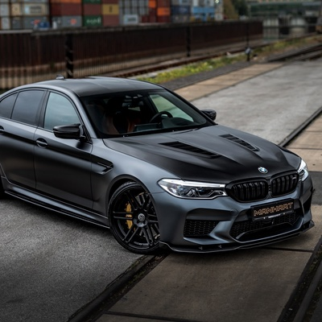
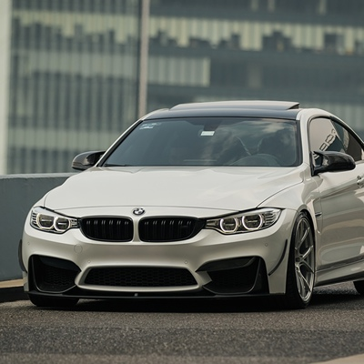

My way avtosaloni
1-saxifa  
2021-yil yanvar oyida BMW o'zining 2020-yildagi savdosi COVID-19 pandemiyasi cheklovlari ta'siri tufayli 8,4 foizga qisqarganini e'lon qildi.Biroq,2020-yilning to'rtinchi choragida BMW o'z mijozlarining talablari 3,2 foizga oshganiga guvoh bo'ldi.2022-yil 18-yanvarda BMW BMW 7 Series (G11) oddiygina "The Final V12" deb nomlangan maxsus nashrini e'lon qildi, bu V-12 dvigateli bilan jihozlangan so'nggi BMW seriyali ishlab chiqarish avtomobili.2023-yil 5-oktabrda BMW Buyuk Britaniya bosh direktori Kris Braunrij Myuller-o'tvo'sning iste'foga chiqishi natijasida 2023-yil 1-dekabrdan boshlab Rolls-Royce bosh direktori lavozimini Torsten Myuller -o'tvo's o'rniga egallashi e'lon qilindi .
 
2012-yilda BMW M avtomobillari uchun M Performance brendi ostidagi yangi toifani taqdim etdi,u "M Sport variantlari va to'g'ridan-to'g'ri M yuqori unumdor modellar o'rtasidagi tafovutni bartaraf etish" uchun mo'ljallangan. [28] Bu qatorga salonda dizel dvigatelli M550d va sayyohlik kuzovlari, X5 M50d va X6 M50d, bu M-belgiga ega bo'lgan birinchi dizel dvigatelli BMW modellarini belgilab beradi. Ko'p o'tmay benzin bilan ishlaydigan M135i debyut qildi.O'shandan beri BMW o'z tarkibidagi deyarli barcha modellarning M Performance variantlarini e'lon qildi,jumladan uchta yangi elektr modeli,i4,ix va i7.